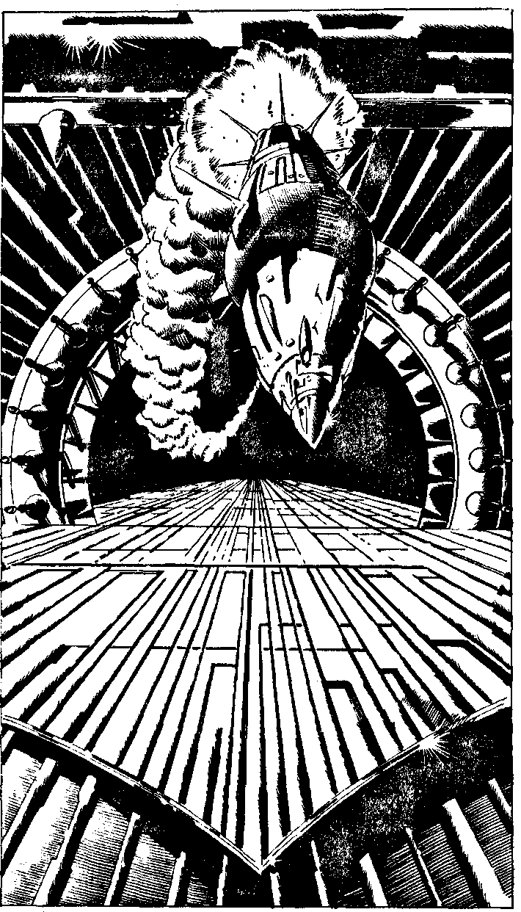

257
If you have not landed on Earth in 1986, then turn to 166. If you have, read on. As the yawning mouth of the hangar entrance looms towards you, you slow down to decide how to enter the complex. Suddenly a missile as large as your Strike Fighter flashes out of the dark opening. It is so close you can actually . make out a huge array of electronic sensors at its tip. Will you:
Bank the Strike Fighter and gun it skywards?
Use electronic counter measures? Fire your twin fusion beams at it?
Turn to 1